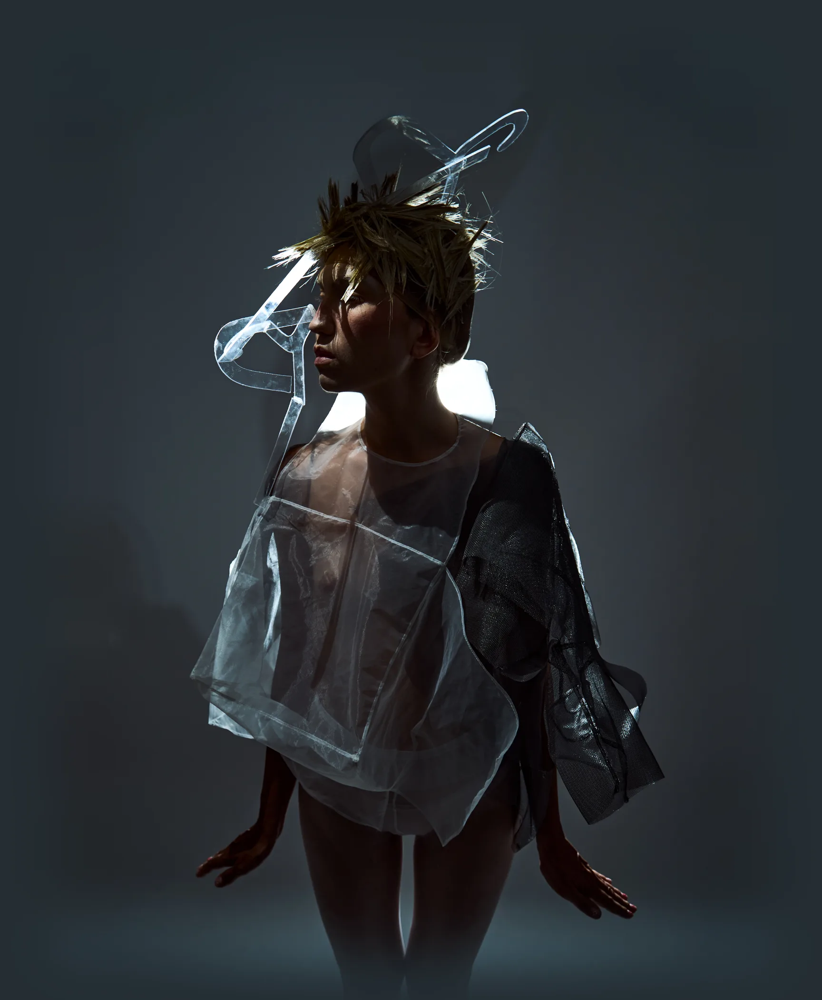
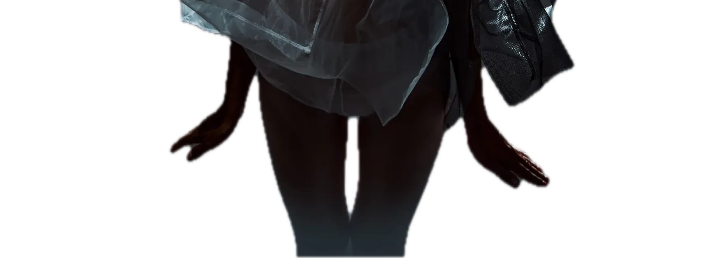

tocca un disegno
Il piano non si e' aperto.
Se hai fatto doppio clic sul file, e' quello: i disegni si leggono con fetch, e da file:// non passa. Apri Apri le prove.command invece.
fetch
file://
Apri le prove.command